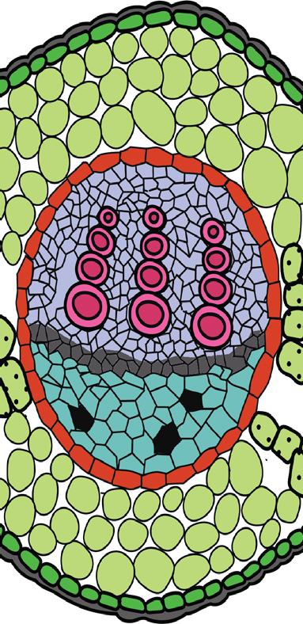

76
Student’s Book - Form Two
Biology for Secondary Schools

Transport of materials in flowering plants
Think
Flowering plants without a vascular
system
The vascular system
Task 4.1
Search the library and internet sources for
the components of the vascular system.
Note down what you have observed.
The vascular system in plants is an assemblage of conducting tissues
and
associated
supportive
fibres
that transport nutrients and fluids throughout the plant body.
Transport of materials in plants occurs through the vascular system.
The vascular system is made up of specialised cells that form tiny straw-like tubes. The vascular system is composed of a collection of conducting tissues and associated supportive fibres. The conductive tissues are of two types, namely xylem and phloem tissues (Figure 4.1). These two tissues
Introduction
Plants need a transport system to transfer manufactured food from the photosynthetic sites, mostly in the leaves, to other parts. The transport system is also required to move water and dissolved minerals from the roots to the rest of the plant. The transport of raw materials, minerals, water, and food in plants occurs through a systematic network of tissues that make up the vascular system.
In this chapter, you will learn about mechanisms for transporting materials in flowering plants which include the vascular system, absorption and movement of water and mineral salts, and transpiration. The competences developed will enable you to use proper measures to maintain the survival of plants.
Chapter Four
08/04/2026 10:18:19